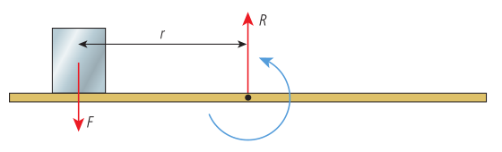
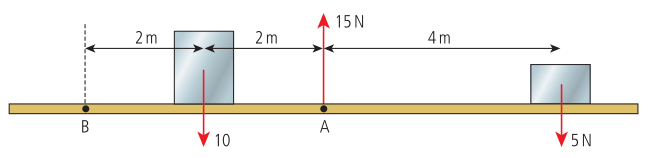
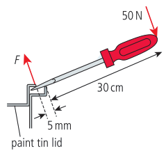
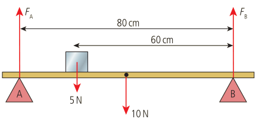

TORQUE (τ)
In Topic 2, forces were acted upon objects, which were simplified to point masses, assuming all forces acted upon the center of masses of the objects. When a force does not act on the center of mass, the object will accelerate as well as rotate, the rotation effect called torque.

τ = F x r
F: force on the object
r: distance from the object to a pivot point
EQUILIBRIUM
When considering torques as scalars instead of vectors, which will be done throughout this unit, it is important to consider torque in the clockwise and counterclockwise directions. As an example, clockwise can be considered the positive direction and counterclockwise the negative direction. With this, an object is balanced when the sum of the torques is zero. Taking this one step further, an object is at equilibrium if both the forces and torques are balanced out.

Upwards = 15 N
Downwards = 10 N + 5 N = 15 N
Clockwise = 5 N x 4 m = 20 Nm
Counterclockwise = 10 N x 2 m = 20 Nm
Clockwise = 5 N x 8 m + 10 N x 2 m = 60 Nm
Counterclockwise = 15 N x 4 m = 60 Nm
From the example, another condition for equilibrium is that the torques about any point on the object sum to zero.
Often times, forces acted are acted on the object at an angle. In these cases, the components perpendicular to the object must be determined through trigonometry and used when calculating torque. The parallel components do not impact the torque as they pass through the pivot and do not have a turning effect.
TORQUE EXAMPLES
Balanced beams
An example of a balanced beam is shown in the “Equilibrium” section above.
Levers

- Torques:
- Clockwise = 50 N x 30 cm = 1500 Ncm
- Counterclockwise = F x 0.5 cm
F = 3000 N
Bridges
Calculate the forces on each of the supports.

Upwards = FA + FB
Downwards = 5 N + 10 N = 15 N
Clockwise = 5 N x 0.2 m + 10 N x 0.4 m = 5 Nm
(Note that the 10 N force is exactly halfway between the ends of the bridge.)
Counterclockwise = FB x 0.8 m
FB = 6.25 N
Since the forces must be balanced,
FA + (6.25 N) = 15 N
FA = 8.75 N
Hanging signs
In a hanging sign example, following the diagram, the tension of the wire and the weight of the sign are balanced by a normal force from the wall, R, and a reaction force from the wall, F, respectively.

For example, if the sign has a mass 50 kg, the bar a mass 10 kg, the bar a length 3 m, and the wire 50 cm from the end forming an angle of 45°, and calculating the unknown forces,
- Torques (about the wall):
- Clockwise = T x sin 45° x 2.5 m
- Counterclockwise = 600 N x 1.5 m
T = 509 N
Since the horizontal forces must be balanced,
- Horizontal forces:
- Left = R
- Right = T x cos 45° = (509 N) x cos 45° = 360 N
R = 360 N
Since the vertical forces must be balanced,
- Vertical forces:
- Upwards = T x sin 45° + F
- Downwards = 600 N
F = 240 N
Leaning ladders
In a leaning ladder example, there are normal forces from the wall and ground to balance out the friction of the ladder on the ground and the weight on the ladder, respectively.

For example, if the ladder with mass 20 kg has a length of 5 m with its bottom 3 m away from the wall, and calculating the friction between the ground and the bottom of the ladder,
Since the vertical forces must be balanced,
- Vertical forces:
- Upwards = Rg
- Downwards = 200 N
Rg = 200 N
Now calculating the torques about the top of the ladder, since if the torques were calculated about the bottom, the friction would be disregarded,
- Torques (about the top of the ladder):
- Clockwise = Rg x d = (200 N) x (3 m) = 600 Nm
- Counterclockwise = F x h + W x (0.5d) = F x (4 m) + (20 kg x 10 m s-2) x (0.5 x 3 m) = F x 4 m + 300 Nm
F = 75 N